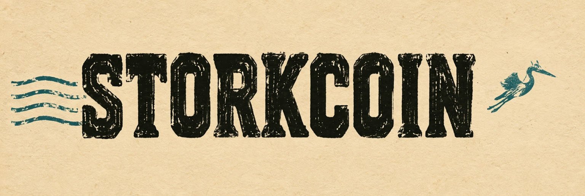
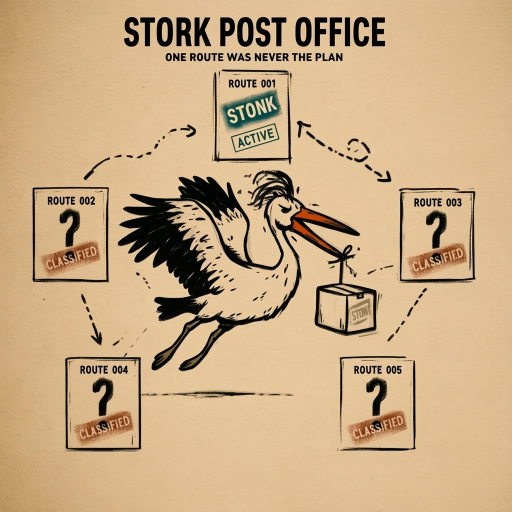
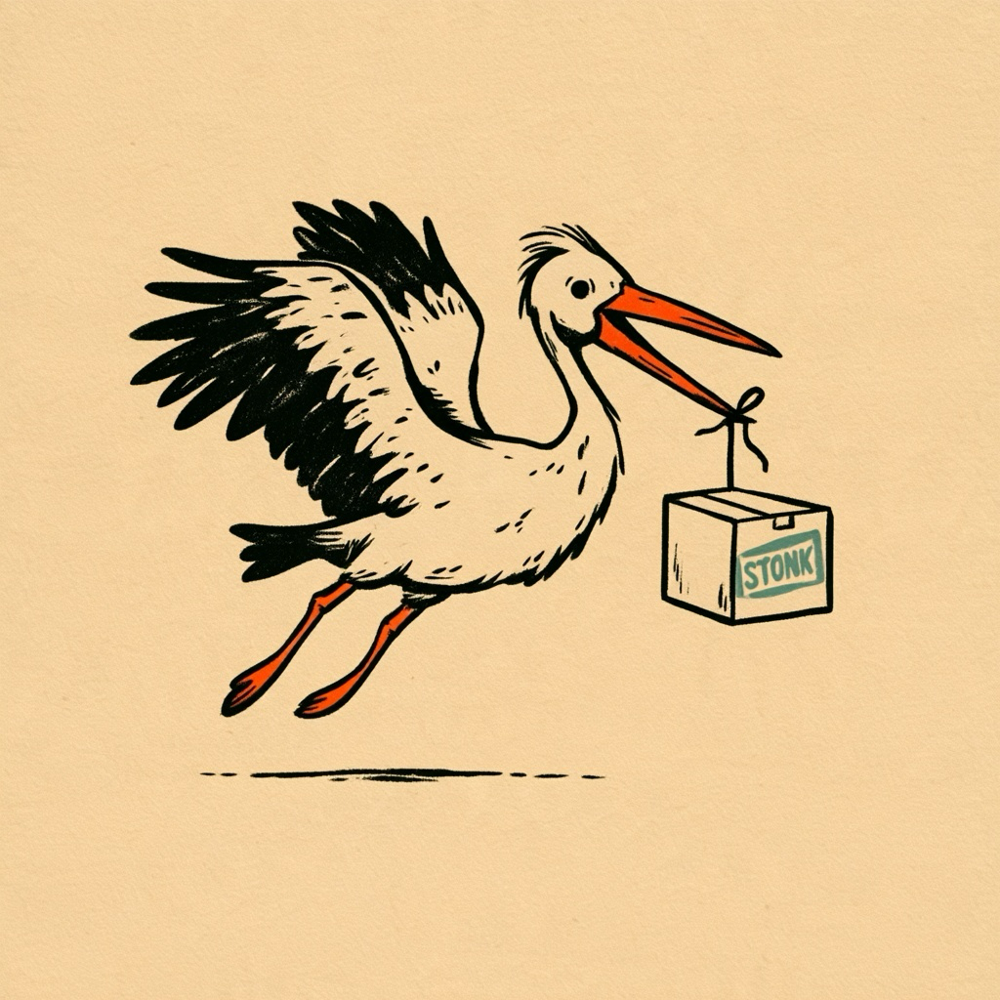
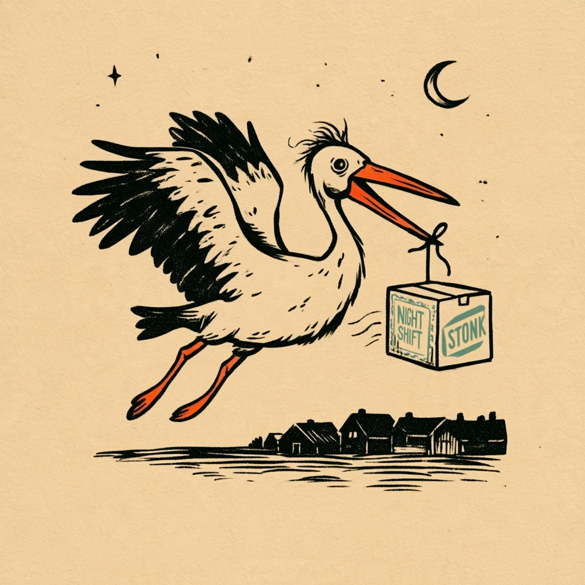

PACKAGE 0001
STONK received by Post Office
Creator contribution · on-chain proof attached.
RECEIVED
One ecosystem. Multiple missions. STORK is the community and postal identity. SCOUT is the flagship platform for independent, read-only research.
Explore StonkFun reward observations, intelligence Radar, daily research briefs and transparent Data Health—backed by dated evidence, not hype.
OPEN SCOUT INTELLIGENCEFree to explore. No STORK ownership, wallet connection or payment is required to use SCOUT. Recorded API evidence is not personal investment return.
Explore the existing Post Office community, documented onchain records and historical dispatches. SCOUT research remains open to everyone, independent of token ownership.

Historical routing concepts and the September 2026 market-desk snapshot are retained for context, not presented as current forecasts or software capabilities.

Archived September 15, 2026 market-calendar snapshot — not a live schedule or current market information.


• The Post Office treasury began with no STORK allocation.
• Creator-owned assets may be voluntarily contributed and remain publicly auditable on-chain.